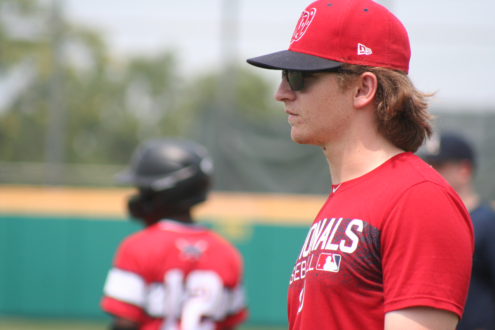

Derek Ohringer
Full-time Student

Ambitious student with a journalism background and experience in sports.
Experience
Site Coordinator
Washington Nationals Youth Baseball Academy
Summer 2021 - Present
- Supervise and coach in practices and games for underserved youth in D.C. as they learn baseball.
- Communicate with volunteers and parents.
Head Student Manager and Operations Assistant
University of Maryland Baseball Team
2021 - Present
- Supervise and coach in practices and games for underserved youth in D.C. as they learn baseball.
- Hired and now supervise more than thirty student managers
YouTuber
The Baseball Channel
2015-2020
- Built an audience with more than 18,000 subscribers and more than 3 million total views.
- Reviewed baseball gear, gave MLB analysis, and gave an inside look at the Maryland Baseball team.
Education
University of Maryland
- Major: Journalism
- Minor: General Business
- Graduating Spring 2023
Skills
- Photoshop
- Premier Pro
- Excel
- Capturing stills and video
- SEO and YouTube's algorithm